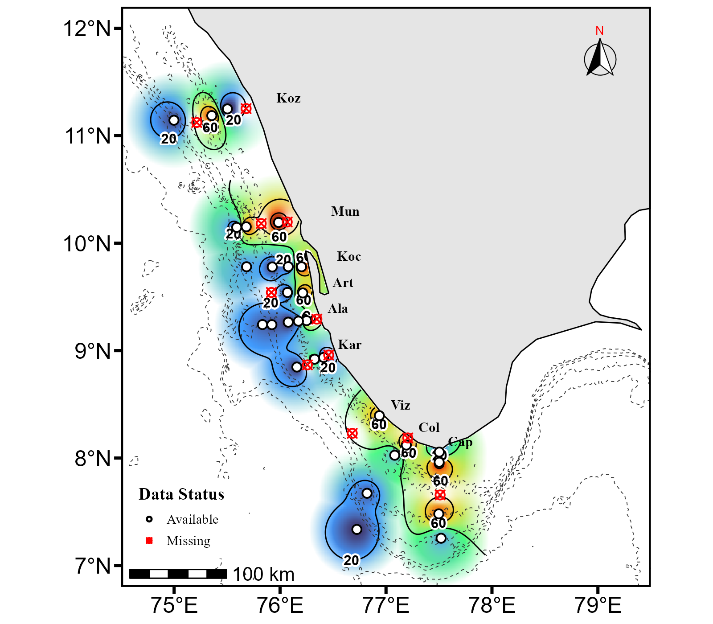

Resources
Open scientific tools, R code and applications for oceanographic analysis. Each resource can have its own description and download button.
R Code 01
Global min max analyser. Used to find out min, max and standard deviation from multiple Excel files.
DOWNLOAD R CODER Code 02
Excel merge app. Used to merge parameters from different Excel files, provided the names are the same.
DOWNLOAD R CODER Code 03

Suttu SOMS V2. Used to plot maps. Minimum and maximum values are determined automatically.
DOWNLOAD R CODERequired Input Files
The following files are provided as templates and supporting data for the mapping and plotting codes. Download the files required for your analysis before running the R code.
Excel Template
Use this Excel template to arrange your station data in the required format. Please do not change the order of the first three columns: Station Name, Latitude and Longitude.
DOWNLOAD EXCEL TEMPLATEGEBCO Bathymetry File
This GEBCO bathymetry file is required by the mapping code to generate the bathymetry/background layer for the maps.
DOWNLOAD GEBCO FILEHow to Use the R Code
These R codes are provided as open and freely usable resources for generating oceanographic analyses, maps and profiles. Please follow the instructions below before running the code.
1. Requirements
- R and RStudio must be installed and working on your computer.
- No programming knowledge is required to run the code if the required files are prepared correctly.
2. Download and Run the R Code
-
Download the required
.Rfile provided in the Resources section. - Open the file. It should automatically open in RStudio.
- Run the code as instructed by RStudio.
3. Required Input Files
For codes that require external input files, you may need an Excel data file and a GEBCO bathymetry file.
For the mapping code, the program will ask you to select the files in the following order: Excel file first → GEBCO file second.
The required GEBCO file can be downloaded from the link provided on this website.
4. Excel File Format — Important
The Excel file must follow a specific column arrangement for the code to work correctly. Please ensure that the columns are arranged in the following order:
| Column | Required Information |
|---|---|
| 1 | Station Name |
| 2 | Latitude |
| 3 | Longitude |
| 4 onwards | Other required parameters |
A sample Excel file is provided for download. Please use the provided file as a template and maintain the same column order and format.
5. Output
-
Once the code runs successfully, the generated
maps and profiles are automatically saved as
.tiffiles. - The output files are saved according to the output location specified by the code.
- TIFF files can be opened using standard image viewers or scientific software that supports the format.
6. Modifying and Reusing the Code
The codes are open for everyone to download, modify and reuse.
You are welcome to:
- Modify the code for different datasets.
- Adapt it to generate other types of oceanographic plots.
- Improve or extend its functionality.
- Use it as a starting point for your own analysis and visualization workflows.
If you make useful improvements, sharing them with the wider scientific community is encouraged.
7. Questions, Suggestions and Collaboration
If you encounter any problems, have suggestions, or need clarification regarding the code, please leave a note through the feedback box provided on this website.
I am also interested in collaborations and knowledge sharing. Researchers, students, programmers and others who are willing to share their knowledge, skills and effort for the benefit of the wider scientific community are warmly welcomed.
8. Open Oceanographic Resources
This website will also provide suitable datasets, supporting information and other resources free of charge, wherever possible, to support oceanographic research, education and scientific exploration.
The aim is to encourage open science, knowledge sharing and collaborative research, particularly in the field of oceanography.
Before You Start
- R is installed and working.
- RStudio is installed and working.
- The required
.Rcode has been downloaded. - The Excel file follows the required format.
- Station Name is in Column 1.
- Latitude is in Column 2.
- Longitude is in Column 3.
- The required GEBCO file is available.
- Files are selected in the correct order: Excel → GEBCO.